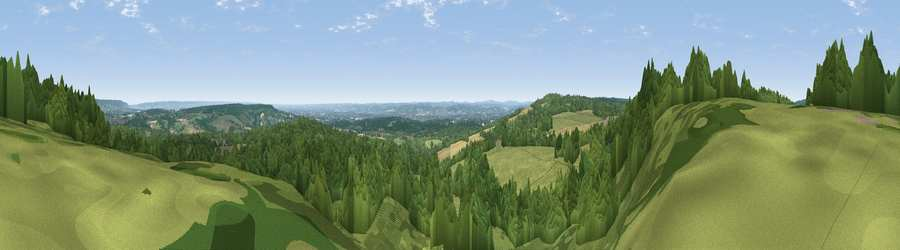

Viewpoint near Plaxtol
#14130 in England · top 2% of its area beats it · near Plaxtol · footpathWhere it is
The exact computed spot (TQ 58225 54725). Click the marker for map links.
Public access: a public right of way passes within 41 m of this spot. Computed from Natural England's CRoW access layer and OpenStreetMap rights of way — not the legal definitive map. Always verify locally.
The view, rendered

A 360° render of this exact spot computed from the terrain model, tree cover and land cover — summer colours, afternoon light, calibrated against photographs of famous viewpoints. Real trees, hedges and buildings will differ in detail.
The panorama
Grey silhouette: terrain skyline in each direction (720 bearings, Earth curvature and refraction included). Dashed green: skyline with trees (+15 m) and buildings (+8 m) as obstacles. Blue strip: how far the ground is visible on each bearing.
Where the view opens
Wedge length = distance to the farthest visible ground on that bearing (vegetation-aware). Rings at 10, 25 and 50 km.
What fills the view
68% woodland · 24% grassland · 6% cropland · 1% built-up
Angular shares of the visible panorama (visual magnitude), not map area. Landscape diversity 0.36 (0–1 Shannon).
Key numbers
More beautiful places nearby
The staircase of upgrades: each row has a higher view potential than everything closer. Driving times are estimates from straight-line distance, calibrated against real road routing — check an actual route before setting out.
| Place | Direction | Drive | Score |
|---|---|---|---|
| Viewpoint near Shipbourne | SW · 2 km | ~5 min | 66.2 |
| Viewpoint near Lower Kingswood | W · 35 km | ~53 min | 67.7 |
| Brightling Obelisk [Brightling Down] | SSE · 35 km | ~53 min | 69.1 |
| Viewpoint near Westwell | E · 40 km | ~60 min | 72.2 |
| Malling Hill | SSW · 46 km | ~67 min | 73.8 |
| Cliffe Hill | SSW · 46 km | ~67 min | 79.3 |
| Viewpoint near Plumpton | SSW · 47 km | ~68 min | 80.4 |
| Viewpoint near Westmeston | SSW · 48 km | ~69 min | 80.9 |
51.26972, 0.26675 · source: screening · position refined by local search. Computed location — check access rights before visiting.